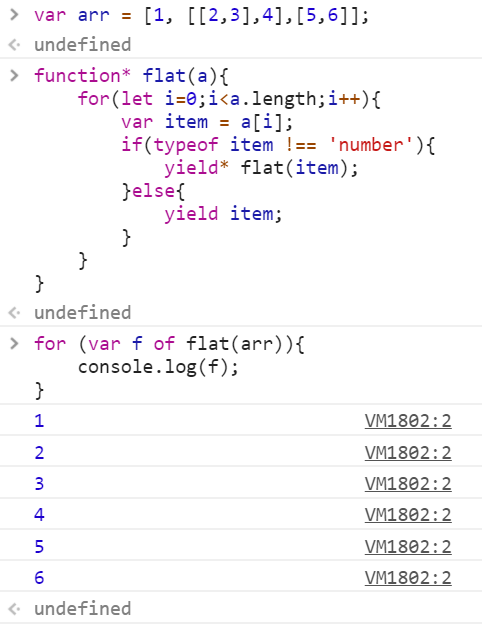

是函数状态机，封装了多个内部的状态，执行generator函数会返回一个遍历器对象，返回的遍历器对象，可以依次遍历Generator函数内部的每一个状态。
形式上其只是一个普通函数但是在定义的时候，要在function关键字与函数名之间有一个星号（*位置在两者之间即可），二是函数体内部使用yield表达式，定义不行的内部状态（yield在英语里的意思就是“产出”）。
那么在执行的过程中，也是一步一步进行调用，并且配合next进行执行。它的value就是当前yield表达式的值，done表示是否已经结束。如果有return，则一直执行到return，否则执行到结束。
由于Generator函数返回的是遍历器对象，只有调用next方法才会遍历下一个内部状态，所以其实提供了一种可以暂停执行的函数。yield表达式就是暂停标志。next方法运行逻辑如下：
1）遇到yield表达式，暂停执行后面的操作，并将紧跟在yield后面的表达式的值，作为返回的对象的value属性值。
2）下一次调用next方法时，再继续往下执行，直到遇到下一个yield表达式。
3）后续不再有yield表达式，则一直运行到结束，知道return结束，并将return语句后面的值，返回
4）若无return，则返回undefined 注：yield表达式后面的表达式，只有当调用next方法、内部指针指向该语句时才会执行。因此等于为 JavaScript 提供了手动的“惰性求值”（Lazy Evaluation）的语法功能。
function* gen(){
yield 123 + 456;
}
如上表达式不会立即求值，只会在next方法将指针移到这一句时，才会求值。
*：yield表达式只能在Generator函数里面，用在其他地方会报错。
还有另外两个例子
forEach方法的参数是一个普通函数，但是在里面使用了yield，所以会报错正确的写法为
*：如果yield表达式用在另一个表达式中，必须放在圆括号里，yield表达式用在等于号右边，可以不加括号。
任意一个对象的Symbol.iterator方法，等于该对象的遍历器生成函数，调用该函数会返回该对象的一个遍历器对象。由于Generator函数就是遍历器生成函数，因此可以把Generator赋值给对象的Symbol.iterator属性，从而使该对象具有Iterator接口
var myiterable = {};
myiterable[Symbol.iterator] = function*(){
yield 1;
yield 2;
yield 3;
};
[...myiterable]//123
上面代码中，Generator 函数赋值给Symbol.iterator属性，从而使得myIterable对象具有了 Iterator 接口，可以被"..."运算符遍历了。
Generator 函数执行后，返回一个遍历器对象。该对象本身也具有Symbol.iterator属性，执行后返回自身。
function * gen(){
//some code
}
var g = gen();
g[Symbol.iterator]() === g // true
gen是一个 Generator 函数，调用它会生成一个遍历器对象g。它的Symbol.iterator属性，也是一个遍历器对象生成函数，执行后返回它自己。